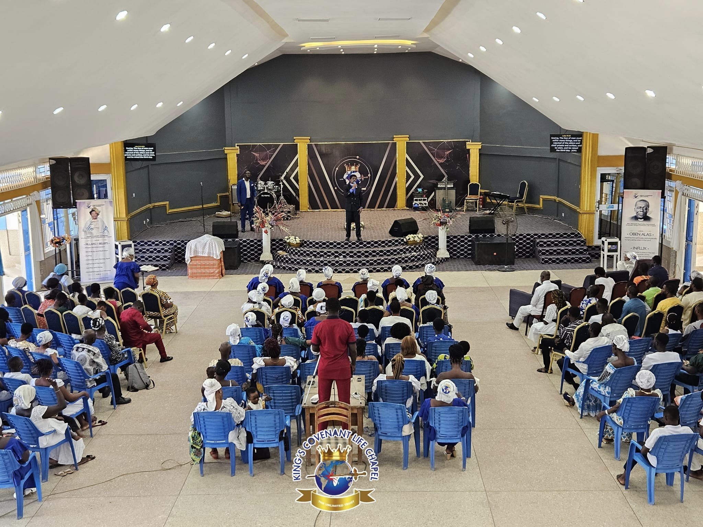

KINGS HISTROY
Welcome to the United Denominations of Action Chapel International. We are one church in many locations worldwide, a place where Divinity meets Humanity. United Denominations of Action Chapel International was founded by the Archbishop Nicholas Duncan-Williams, who is the founder and father of the Charismatic Movement in Ghana.
UDACI, one church in many locations, has over 500 branch and affiliate churches located Africa, Europe, and North America, and since 1992 has met in the Prayer Cathedral near the Accra airport.
THE CHURCH

Welcome to the United Denominations of Action Chapel International. We are one church in many locations worldwide, a place where Divinity meets Humanity.
United Denominations of Action Chapel International was founded by the Archbishop Nicholas Duncan-Williams, who is the founder and father of the Charismatic Movement in Ghana. UDACI, one church in many locations, has over 500 branch and affiliate churches located in Africa, Europe, and North America, and since 1992 has met in the Prayer Cathedral near Accra airport.
United Denominations of Action Chapel International was founded by the Archbishop Nicholas Duncan-Williams, who is the founder and father of the Charismatic Movement in Ghana. UDACI, one church in many locations, has over 500 branch and affiliate churches located in Africa, Europe, and North America, and since 1992 has met in the Prayer Cathedral near Accra airport.
THE FOUNDER
Archbishop Nicholas Duncan-Williams is the Presiding Archbishop and General Overseer of United Denominations of Action Chapel International, head-quartered in Accra, Ghana. He is the founder and father of the Charismatic Movement in Ghana and other parts of West Africa. United Denominations of Action Chapel International, one church in many locations, with more than 200 branch churches and 2,000 affiliate ministries globally. Known in many parts of the world as the Apostle of Strategic Prayer, Archbishop Duncan-Williams is also the Founder and President of NDW Ministries that hosts an annual Prayer Summit, bringing revival to international cities through the power of corporate, intercessory and prophetic prayer.
Archbishop Duncan-Williams also serves as an intercessor and minister for numerous African Heads of State, civic and business leaders. The recipient of many global honors and the only African pastor to have ever prayed at an official program during the United States of America Presidential Inauguration, Archbishop is respected as a coach, mentor, and advisor to countless clergy and civic leaders, training thousands and building communities and nations for the end time harvest.
WHAT WE BELIEVE
OUR VISION
To make Christ known throughout the world through the multiplication of Churches and Denominations.
OUR MISSION
To train, equip, and develop Christ-like disciples through prayer, the Word of God, prophetic and spiritual warfare, deliverance, and soul-winning for the end-time harvest.